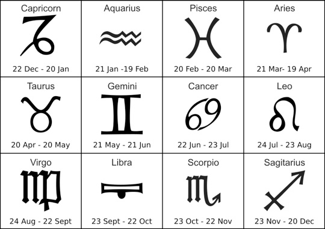

A very long time ago, people created astrology by studying the motions of the heavens. A person's zodiac sign was determined by what constellation the Sun was in front of when they were born. Ranges of birthdates were recorded for each constellation of the zodiac. However, these dates should have been updated over time, because the Sun isn't in the exact same place on the same day each year. It appears to move eastward ever so slightly. Over a long period of time, this can add up to a big difference! It's enough that most people's sidereal sign is shifted over one from their tropical sign. In astronomy, the phenomenon that causes this shift is called axial precession. You can learn more about this here.
